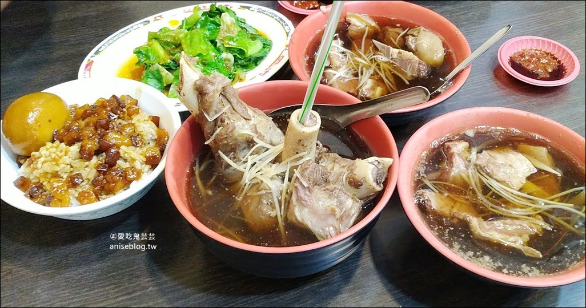

賴岡山羊肉
google評價：4.3★
店家資訊
地址：新北市新店區中正路244-4號1樓
營業時間：下午4:00至晚上00:00
店家電話：0922-579-320

推薦菜單
羊腳筋湯140元 帶皮羊肉湯130元 羊小排湯110元
滷肉飯(小)30元 滷肉飯(大)50元 乾意麵40元
帶皮意麵湯140元 帶皮麵線湯140元 帶皮米粉湯140元
羊肉片意麵湯100元 羊肉片麵線湯100元 羊肉片米粉湯100元
燙青菜30元 滷蛋10元 白飯10元
顧客評論
雖然是賣羊肉的店，但美食部落客紛紛推薦這家店的滷肉飯，光從外表看色澤很深，吃起來肥軟肥軟的，帶點膠質，但也不會很膩，不過口味偏重，要配水喝。除了滷肉飯以外大家都會搭配帶皮羊肉湯，整體溫和順口的當歸藥膳湯帶點清甜味，夏天和冬天都很適合，羊肉煮到軟嫩適中，保有彈性和嚼感，幾乎吃不到羊羶味。